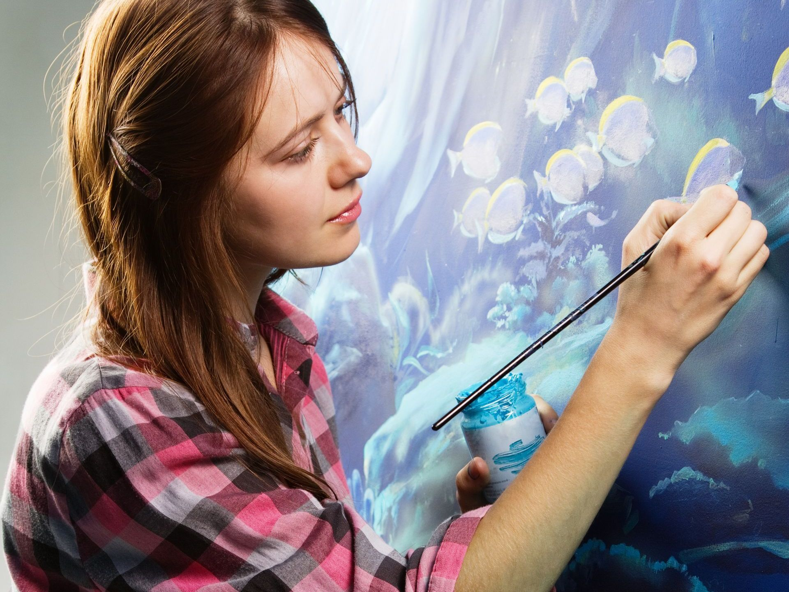

Freiberufliche Künstler und Publizisten sind verpflichtet, einen Künstlersozialkasse Antrag, abgekürzt KSK Antrag, zu stellen. Wer aber ist Künstler oder Publizist? Es existiert keine verbindliche Definition. Laut Bundesministerium für Arbeit und Soziales schaffen Künstler Musik, darstellende oder bildende Kunst, üben diese aus oder lehren sie.
Vorteile KSK-BeratungAls Publizisten bezeichnet die Behörde diejenigen, die als Schriftsteller, Journalist oder in anderer Weise publizistisch tätig sind, oder die Publizistik lehren. Die Folge der unklaren und unverbindlichen Definition ist, dass die Künstlersozialkasse einzeln prüft, und im Ergebnis eine Entscheidung trifft. Zu diesem Zweck fordert sie vom Künstler oder Publizisten, der den KSK Antrag stellt, umfangreiche Unterlagen an, zum Beispiel Arbeitsnachweise, Belege über Honorare oder Gagen.
Klar definiert hingegen ist die Bedingung, dass die selbständige Erwerbstätigkeit nicht nur vorübergehend und im Wesentlichen im Inland ausgeübt wird. Das Einkommen, das für einen Künstlersozialkasse Antrag erforderlich ist, muss 3.900 Euro jährlich überschreiten. Berufsanfänger sind davon in zwei der ersten drei Jahre einer erstmaligen Selbständigkeit ausgenommen.
Die künstlerische oder publizistische Tätigkeit muss dauerhaft und überwiegend im Inland ausgeübt werden.
Das Jahreseinkommen muss 3.900 Euro übersteigen – mit Ausnahmen für Berufsanfänger in den ersten drei Jahren.
Arbeitsnachweise, Honorarbelege und Gagen sind für die Einzelfallprüfung durch die KSK beizubringen.

Freiberufler tragen die Kosten für Krankenversicherung, Pflegeversicherung und Altersvorsorge selbst. Beträchtliche Summen sind monatlich fällig, um den Versicherungsschutz zu gewährleisten. Für Künstler, Publizisten und Medienschaffende reduziert die Pflichtversicherung in der Künstlersozialkasse diese Ausgaben um etwa die Hälfte.
Aufgabe der Künstlersozialkasse ist es, das Künstlersozialversicherungsgesetz (KSVG) umzusetzen. Das Gesetz regelt, dass Künstler und Publizisten in ähnlicher Weise in der gesetzlichen Sozialversicherung abgesichert sind wie Arbeitnehmer. Die Künstlersozialkasse übernimmt de facto die Rolle des Arbeitgebers. Sie ist selbst kein Leistungsträger, ihre Aufgabe ist die Koordination. Sie führt die Beiträge ihrer Mitglieder zu einer frei wählbaren Krankenversicherung und zur Renten- und Pflegeversicherung ab.
Wie der Arbeitgeber in einem sozialversicherungspflichtigen Beschäftigungsverhältnis übernimmt die Künstlersozialkasse 50 Prozent der Kosten. Die verbleibenden 50 Prozent sind der Beitrag des Freiberuflers. Die Höhe der Beiträge richtet sich nach dem Einkommen.
Die Künstlersozialkasse errechnet die Beitragsanteile, zieht diese ein und leitet sie an die Leistungsträger weiter. Künstler und Publizisten, die erfolgreich einen Künstlersozialkasse Antrag gestellt haben, erhalten somit Zugriff auf die damit verbundenen gesamten gesetzlichen Leistungen. Gern beraten wir Sie in diesen Fragen ausführlich. Schreiben Sie uns eine E-Mail oder rufen Sie an.

Ist der KSK Antrag gestellt, braucht es viel Geduld für das langwierige Prozedere. Da jeder Fall einzeln anhand zahlreicher Unterlagen geprüft wird, vergeht viel Zeit bis zu einem Ergebnis. Die von der Künstlersozialkasse angeforderten Unterlagen sind die Grundlage für die Entscheidung. Das Zusammenstellen dieser Nachweise ist eine Herausforderung, die Zeit, Konzentration und Mühe erfordert. Nachlässigkeit wirkt sich gegebenenfalls negativ aus.
Wir unterstützen Sie gern bei der Antragstellung. Nehmen Sie unsere Hilfe und Erfahrung in Anspruch. Auch wenn die Bearbeitungszeit lang ist, Nachteile entstehen nicht, wenn Sie sich die Antragstellung bestätigen lassen. Im Falle einer Bewilligung sind Sie ab dem Tag des Zugangs Ihres Antrags bei der Künstlersozialkasse anspruchsberechtigt.
Die Homepage der Künstlersozialkasse bietet die Möglichkeit, sich direkt anzumelden, die Anmeldeunterlagen, den Fragebogen und Informationen herunterzuladen sowie um Speicherung der Daten zur Dokumentation der Meldung zu bitten. Per E-Mail erhalten Sie ein vorläufiges Aktenzeichen als Nachweis Ihrer Meldung. Wir empfehlen die elektronische Anforderung mit Übersendung per Post.
Schon der Zeitpunkt der Anforderung sollte häufig im Vorfeld gut überlegt werden. Im Rahmen einer Beratung kristallisiert sich der optimale Zeitpunkt in der Regel erst heraus. Das alleine kann schnell einen dreistelligen Eurobetrag an gesparten oder doppelt gezahlten Beiträgen ausmachen.
Basis für die Entscheidung über den Künstlersozialkasse Antrag sind die eingereichten Unterlagen. Dazu gehören aktuelle Verträge, Abrechnungen, Nachweise über Veröffentlichungen, Aufführungen, Ausstellungen, Konzerte und ähnliches. Je mehr Nachweise vorgelegt werden, möglichst von zahlreichen unterschiedlichen Auftraggebern, umso besser. Achten Sie darauf, dass aus den Nachweisen hervorgeht, welche Tätigkeiten Sie jeweils konkret ausgeübt haben, und dass Sie als Freiberufler unter Vertrag waren. Bei manchen Berufen, zum Beispiel bei Schauspielern, ist es mitunter schwierig zu beurteilen, ob freiberuflich oder versicherungspflichtig beschäftigt wird.
Das voraussichtliche Jahreseinkommen, aus dem sich die Beitragshöhe ergibt, wird in geschätzter Höhe angegeben. Änderungen sind im Verlauf des Jahres möglich. Errechnet wird das Einkommen nach den allgemeinen Gewinnermittlungsvorschriften des Einkommensteuerrechts in Form einer Gewinn- und Verlustrechnung.
Das voraussichtliche Jahreseinkommen, aus dem sich die Beitragshöhe ergibt, wird in geschätzter Höhe angegeben. Änderungen sind im Verlauf des Jahres möglich. Errechnet wird das Einkommen nach den allgemeinen Gewinnermittlungsvorschriften des Einkommensteuerrechts in Form einer Gewinn- und Verlustrechnung.
Wir bieten Ihnen an, Ihre Unterlagen zu sichten und Hilfestellung zu geben.
Wenden Sie sich an uns. Wir sind für Sie da.
Werden Sie in die Künstlersozialkasse aufgenommen, erhalten Sie einen entsprechenden Bescheid. Die Mitgliedschaft ist mit Rechten und Pflichten verbunden. Sie haben das Recht auf die Leistungen, für die Sie durch die Beitragszahlungen einen Anspruch erwerben.
Als Mitglied der Künstlersozialkasse unterliegen Sie Auskunfts- und Meldepflichten. Dafür sind die Vordrucke der Künstlersozialkasse zu nutzen. So ist bis zum 1. Dezember eines Jahres das voraussichtliche Jahreseinkommen für das folgende Kalenderjahr zu melden.
Die Künstlersozialkasse ist berechtigt, die Angaben zu prüfen und Einkommenssteuerbelege zu verlangen. Sie führt gegebenenfalls auch Stichproben durch.
Auch für Mitglieder gilt Wahlfreiheit zwischen gesetzlicher und privater Krankenkasse. Eine Rückkehr aus einer privaten in eine gesetzliche Kasse ist jedoch nur für Berufsanfänger möglich.
Für die Berechnung sind die jeweils gültigen Beitragssätze maßgeblich. Einen eventuellen Zusatzbeitrag Ihrer Krankenkasse tragen Sie allein.
Bis zum 1. Dezember jedes Jahres ist das voraussichtliche Jahreseinkommen für das folgende Kalenderjahr zu melden.
Wir geben gern weitere Auskünfte. Unsere Mitglieder beraten wir gerne zu allen Belangen rund um die Künstlersozialkasse und vielen weiteren Themen.